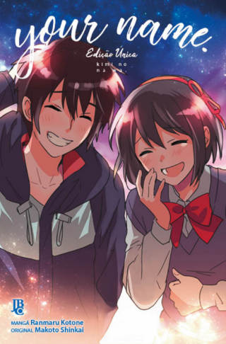

O mangá de Kimi no que é conhecido aqui no ocidente como Your Name, possui uma narrativa que segue na mesma direção que o seu filme e a light novel que foi baseado. O mangá sendo o último matéria que narra a história a ser lançado.
O mangá possui diferenças para a novel e o filme não apenas por ser uma história em quadrinhos, mas sim por trazer novas informações que não estão presente nas outras obras
Um dos principais acrescento que essa obra possui é a forma como um personagem visualiza a vida do outro, enquanto nas outras eles apenas fazem ações que na maioria das vezes sem ter opinião, aqui eles já possuem, a Mitsuha não enxerga a vida do Taki como prefeita como ela imaginava que seria, o Taki mostra a sua opinião sobre o local que ela mora como sendo um local muito no interior e vazio. Mas o que mais tem importância é na relação do pai do Taki com o próprio Takie com a Mitsuha em seu corpo, essa ação possui muito valor para a obra como todo mesmo sendo pequeno de duas a três páginas preenche de forma perfeita o buraco das outras versões.
O mangá tem maior detalhamento nas emoções dos personagens não apenas com os dois protagonistas, mas em todos os personagens. Esse foco traz uma nova experiência para os leitos sejam para fãs que já gostam da obra em outras versões, como para pessoas que nunca tiveram contato com a obra esse seria uma ótima forma de conhecer a história.